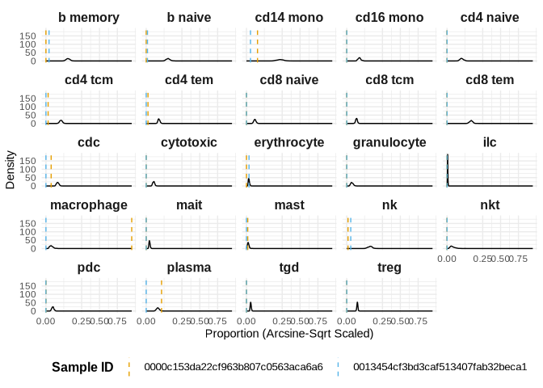

PosteriorHCA applies Bayesian inference from the sccomp package to model the comprehensive Human Cell Atlas (HCA), allowing researchers to probabilistically measure human cellular composition.
This package models variations in tissue composition across:
Cell Types
Sex
Age
Ethnicity
Disease conditions
Tissue Groups
The probabilistic landscape is pre-trained, meaning it represents a posterior distribution estimated from millions of cells. PosteriorHCA makes this queryable, allowing researchers to:
- Test hypotheses against a precomputed reference baseline.
- Compare new samples to the expected cellular composition distribution.
- Assess how cell proportions vary across human conditions.
Installation
To install the latest development version of PosteriorHCA from GitHub, run:
# Install devtools if not already installed
install.packages("devtools")
# Install PosteriorHCA from GitHub
devtools::install_github("MangiolaLaboratory/posteriorHCA")Once installed, load the package:
library(posteriorHCA)Usage Example
1. Load relavent packages and example data
The package includes a small example dataset for demonstration:
library(dplyr)
library(tidyr)
library(ggplot2)
data(example_proportions)
print(example_proportions)
#> # A tibble: 48 × 3
#> sample_id cell_type proportion
#> <chr> <chr> <dbl>
#> 1 0000c153da22cf963b807c0563aca6a6 b memory 0
#> 2 0000c153da22cf963b807c0563aca6a6 b naive 0
#> 3 0000c153da22cf963b807c0563aca6a6 cd14 mono 0.0259
#> 4 0000c153da22cf963b807c0563aca6a6 cd16 mono 0
#> 5 0000c153da22cf963b807c0563aca6a6 cd4 naive 0
#> 6 0000c153da22cf963b807c0563aca6a6 cd4 tcm 0.00104
#> 7 0000c153da22cf963b807c0563aca6a6 cd4 tem 0.000692
#> 8 0000c153da22cf963b807c0563aca6a6 cd8 naive 0
#> 9 0000c153da22cf963b807c0563aca6a6 cd8 tcm 0
#> 10 0000c153da22cf963b807c0563aca6a6 cd8 tem 0
#> # ℹ 38 more rows2. Run Posterior Testing
The core function, posterior_test(), allows testing new data against the probabilistic model:
result <- posterior_test(
proportions = example_proportions,
sex = "male",
age_bin = "Middle Age",
disease_groups = "Normal",
ethnicity_groups = "European",
tissue_groups = "blood",
load_model_to_global_env = T
)
#> ℹ Using cached model file: /home/chzhan1/.cache/R/posteriorHCA/estimates_age_bins___L2.rds
#> Model file loaded: Global Env.
#> All inputs of metadata are valid.
#> Start to generative sampling form posterior...
#> Loading model from cache...
#> Running standalone generated quantities after 1 MCMC chain, with 1 thread(s) per chain...
#>
#> Chain 1 finished in 0.0 seconds.
#> # A tibble: 48 × 7
#> sample_id_observed cell_type proportion_observed Empirical_Confidence mean
#> <chr> <chr> <dbl> <dbl> <dbl>
#> 1 0000c153da22cf963b… b memory 0 0 0.103
#> 2 0000c153da22cf963b… b naive 0 0 0.101
#> 3 0000c153da22cf963b… cd14 mono 0.0259 0 0.226
#> 4 0000c153da22cf963b… cd16 mono 0 0 0.0348
#> 5 0000c153da22cf963b… cd4 naive 0 0 0.0465
#> 6 0000c153da22cf963b… cd4 tcm 0.00104 0 0.0484
#> 7 0000c153da22cf963b… cd4 tem 0.000692 0 0.0348
#> 8 0000c153da22cf963b… cd8 naive 0 0 0.0154
#> 9 0000c153da22cf963b… cd8 tcm 0 0 0.0206
#> 10 0000c153da22cf963b… cd8 tem 0 0 0.120
#> # ℹ 38 more rows
#> # ℹ 2 more variables: lower <dbl>, upper <dbl>
About load_model_to_global_env
In the posterior_test function, we added arg - load_model_to_global_env to determine if the model file should be loaded into global env or local env (scoop within the function running) in R session. By default, it is set to be TRUE - load_model_to_global_env = T, and this is particularly useful when you wish to repeatedly running the function. Loading model file into global env prevents re-loading the model file, which usually will cost you minutes to run.
3. Inspect the Results
Posterior Distribution Table
print(result$result_table)
#> # A tibble: 48 × 7
#> sample_id_observed cell_type proportion_observed Empirical_Confidence mean
#> <chr> <chr> <dbl> <dbl> <dbl>
#> 1 0000c153da22cf963b… b memory 0 0 0.103
#> 2 0000c153da22cf963b… b naive 0 0 0.101
#> 3 0000c153da22cf963b… cd14 mono 0.0259 0 0.226
#> 4 0000c153da22cf963b… cd16 mono 0 0 0.0348
#> 5 0000c153da22cf963b… cd4 naive 0 0 0.0465
#> 6 0000c153da22cf963b… cd4 tcm 0.00104 0 0.0484
#> 7 0000c153da22cf963b… cd4 tem 0.000692 0 0.0348
#> 8 0000c153da22cf963b… cd8 naive 0 0 0.0154
#> 9 0000c153da22cf963b… cd8 tcm 0 0 0.0206
#> 10 0000c153da22cf963b… cd8 tem 0 0 0.120
#> # ℹ 38 more rows
#> # ℹ 2 more variables: lower <dbl>, upper <dbl>
Input Arguments and Valid Values
With the posterior_test() function, users can provide various metadata inputs corresponding to observed sample characteristics. These include sex, age group, disease condition, ethnicity, and tissue type, etc, along with observed cell type proportions. However, if some metadata or proportions are unknown, users can leave these fields empty, and the function will still generate meaningful posterior estimates based on the comprehensive reference.
If users choose to specify metadata, it must be consistent with the Human Cell Atlas (HCA) annotations to ensure accurate comparisons. Below is a comprehensive list of valid arguments:
Cell Types: “b memory”, “b naive”, “cd14 mono”, “cd16 mono”, “cd4 naive”, “cd4 tcm”, “cd4 tem”, “cd8 naive”, “cd8 tcm”, “cd8 tem”, “cdc”, “cytotoxic”, “erythrocyte”, “granulocyte”, “ilc”, “macrophage”, “mait”, “mast”, “nk”, “nkt”, “pdc”, “plasma”, “tgd”, “treg”
Sex: “female”, “male”, “unknown”
Age Groups: “Young Adulthood”, “Senior”, “Middle Age”, “Childhood”, “Adolescence”, “Infancy”
Disease Groups: “Normal”, “COVID-19 related”, “Metabolic and Other Disorders: Renal and Urinary Disorders”, “other”, “Metabolic and Other Disorders: Gastrointestinal Disorders”, “Respiratory Conditions: General Respiratory Disorders”, “Infectious and Immune-related Diseases: Autoimmune and Immune-Related Disorders”, “Infectious and Immune-related Diseases: Respiratory Infections”, “Cancer: Renal Cancer”, “Cancer: Gastrointestinal Cancer”, “Cancer: Hematologic Cancer”, “Cancer: Breast Cancer”, “Cancer: Lung Cancer”, “Respiratory Conditions: Restrictive Lung Diseases”, “Neurodegenerative and Neurological Disorders: Neurodegenerative Disorders”, “Metabolic and Other Disorders: Metabolic Disorders”, “Respiratory Conditions: Obstructive Lung Diseases”
Ethnicity Groups: “African”, “Other/Unknown”, “European”, “East Asian”, “Hispanic/Latin American”, “South Asian”, “Native American & Pacific Islander”
Tissue Groups: “respiratory system”, “blood”, “renal system”, “epithelium and mucosal tissues”, “nasal, oral, and pharyngeal regions”, “cerebral lobes and cortical areas”, “breast”, “cardiovascular system”, “small intestine”, “trachea”, “endocrine system”, “lymphatic system”, “prostate”, “sensory-related structures”, “liver”, “oesophagus”, “large intestine”, “spleen”, “brainstem and cerebellar structures”, “bone marrow”, “stomach”, “female reproductive system”, “thymus”, “adipose tissue”, “integumentary system (skin)”, “gallbladder”, “pancreas”
Session Info
sessionInfo()
#> R version 4.4.0 (2024-04-24)
#> Platform: x86_64-pc-linux-gnu
#> Running under: Red Hat Enterprise Linux 9.4 (Plow)
#>
#> Matrix products: default
#> BLAS/LAPACK: FlexiBLAS OPENBLAS; LAPACK version 3.10.1
#>
#> locale:
#> [1] LC_CTYPE=en_AU.UTF-8 LC_NUMERIC=C
#> [3] LC_TIME=en_AU.UTF-8 LC_COLLATE=en_AU.UTF-8
#> [5] LC_MONETARY=en_AU.UTF-8 LC_MESSAGES=en_AU.UTF-8
#> [7] LC_PAPER=en_AU.UTF-8 LC_NAME=C
#> [9] LC_ADDRESS=C LC_TELEPHONE=C
#> [11] LC_MEASUREMENT=en_AU.UTF-8 LC_IDENTIFICATION=C
#>
#> time zone: Australia/Melbourne
#> tzcode source: system (glibc)
#>
#> attached base packages:
#> [1] stats graphics grDevices utils datasets methods base
#>
#> other attached packages:
#> [1] ggplot2_3.5.1 tidyr_1.3.1 dplyr_1.1.4 posteriorHCA_0.1.0
#>
#> loaded via a namespace (and not attached):
#> [1] tidyselect_1.2.1 farver_2.1.2
#> [3] fastmap_1.2.0 SingleCellExperiment_1.28.1
#> [5] tensorA_0.36.2.1 digest_0.6.37
#> [7] dittoSeq_1.18.0 lifecycle_1.0.4
#> [9] sccomp_1.99.12 processx_3.8.6
#> [11] magrittr_2.0.3 posterior_1.6.1
#> [13] compiler_4.4.0 rlang_1.1.5
#> [15] sass_0.4.9 tools_4.4.0
#> [17] utf8_1.2.4 yaml_2.3.10
#> [19] data.table_1.17.0 knitr_1.49
#> [21] labeling_0.4.3 S4Arrays_1.6.0
#> [23] DelayedArray_0.32.0 RColorBrewer_1.1-3
#> [25] cmdstanr_0.8.1 abind_1.4-8
#> [27] withr_3.0.2 purrr_1.0.4
#> [29] BiocGenerics_0.52.0 grid_4.4.0
#> [31] stats4_4.4.0 colorspace_2.1-1
#> [33] scales_1.3.0 ggridges_0.5.6
#> [35] SummarizedExperiment_1.36.0 cli_3.6.4
#> [37] rmarkdown_2.29 crayon_1.5.3
#> [39] generics_0.1.3 rstudioapi_0.17.1
#> [41] httr_1.4.7 tzdb_0.4.0
#> [43] cachem_1.1.0 stringr_1.5.1
#> [45] zlibbioc_1.52.0 parallel_4.4.0
#> [47] XVector_0.46.0 matrixStats_1.5.0
#> [49] vctrs_0.6.5 Matrix_1.7-2
#> [51] jsonlite_1.9.1 callr_3.7.6
#> [53] IRanges_2.40.1 hms_1.1.3
#> [55] patchwork_1.3.0 S4Vectors_0.44.0
#> [57] ggrepel_0.9.6 jquerylib_0.1.4
#> [59] glue_1.8.0 ps_1.9.0
#> [61] distributional_0.5.0 cowplot_1.1.3
#> [63] stringi_1.8.4 gtable_0.3.6
#> [65] GenomeInfoDb_1.42.3 GenomicRanges_1.58.0
#> [67] UCSC.utils_1.2.0 munsell_0.5.1
#> [69] instantiate_0.2.3 tibble_3.2.1
#> [71] pillar_1.10.1 htmltools_0.5.8.1
#> [73] GenomeInfoDbData_1.2.13 R6_2.6.1
#> [75] rprojroot_2.0.4 evaluate_1.0.3
#> [77] lattice_0.22-6 Biobase_2.66.0
#> [79] readr_2.1.5 backports_1.5.0
#> [81] pheatmap_1.0.12 bslib_0.9.0
#> [83] Rcpp_1.0.14 gridExtra_2.3
#> [85] SparseArray_1.6.2 checkmate_2.3.2
#> [87] xfun_0.51 MatrixGenerics_1.18.1
#> [89] fs_1.6.5 forcats_1.0.0
#> [91] pkgconfig_2.0.3